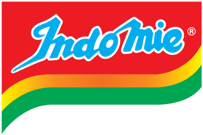
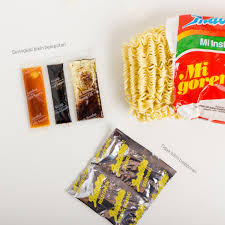

Yang membuat web ini
| Nama | Nim | Prodi |
|---|---|---|
| Irwan skibidi rizz | I0724027 | Elektro |
Indomie adalah merek mi instan yang diproduksi oleh Indofood CBP, anak perusahaan Indofood Sukses Makmur di Indonesia.[1] Indofood sendiri merupakan produsen mi instan terbesar di dunia, dengan puluhan pabrik di berbagai negara. Pasar ekspor utama Indofood termasuk Timor Leste, Australia, Papua Nugini, Arab Saudi, Taiwan, dan negara-negara lain di Eropa, Afrika, Timur Tengah, dan Asia.
Komposisi: Tepung terigu, minyak nabati, tepung tapioka, garam, penstabil, pengatur keasaman, mineral (zat besi), pewarna (tartrazin CI 19140), antioksidan (TBHQ).
| Nama | Nim | Prodi |
|---|---|---|
| Irwan skibidi rizz | I0724027 | Elektro |